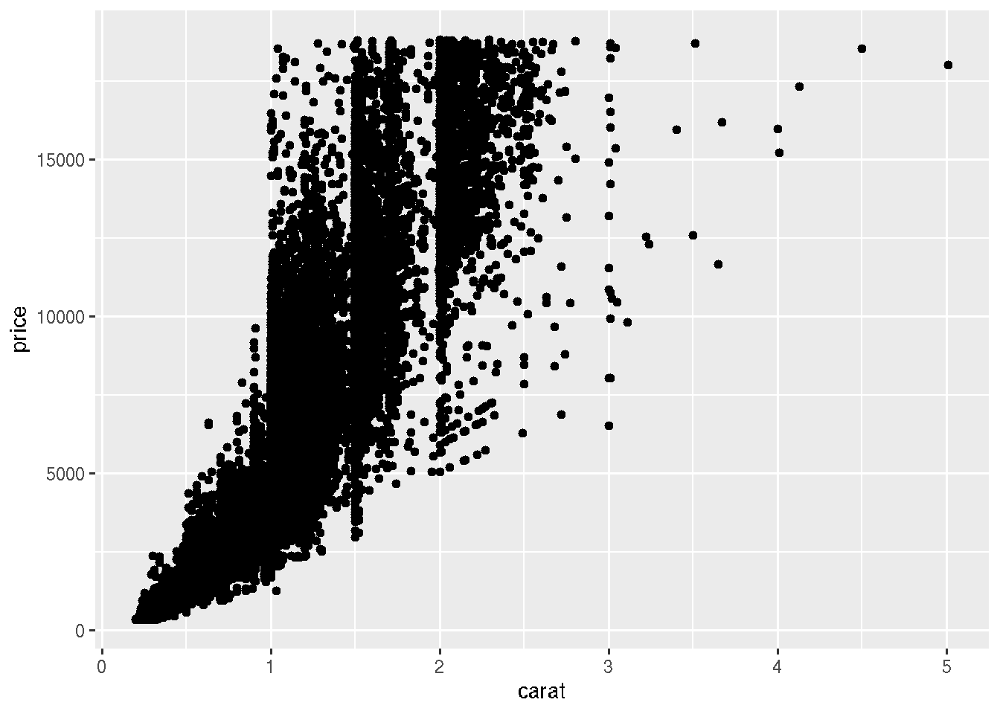
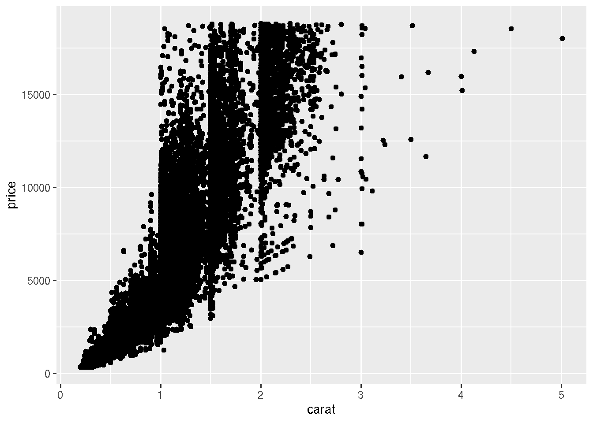
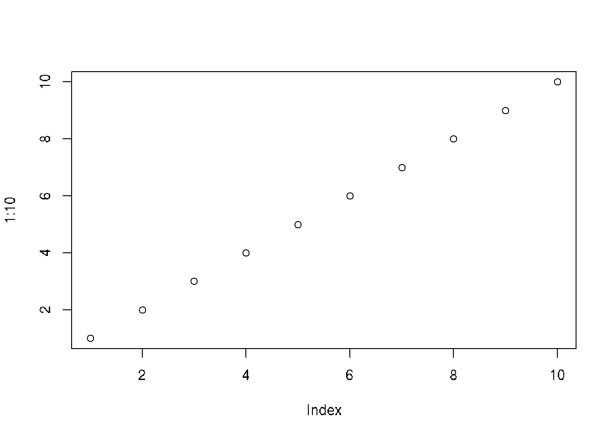

library(ggplot2)
ggplot(data = diamonds, aes(x = carat, y = price)) +
geom_point()
library(ggplot2)
ggplot(data = diamonds, aes(x = carat, y = price)) +
geom_point()
# list the installed packages
installed.packages() Package LibPath Version
AsioHeaders "AsioHeaders" "/usr/local/lib/R/site-library" "1.22.1-2"
askpass "askpass" "/usr/local/lib/R/site-library" "1.2.1"
backports "backports" "/usr/local/lib/R/site-library" "1.5.0"
base64enc "base64enc" "/usr/local/lib/R/site-library" "0.1-3"
BH "BH" "/usr/local/lib/R/site-library" "1.84.0-0"
brew "brew" "/usr/local/lib/R/site-library" "1.0-10"
brio "brio" "/usr/local/lib/R/site-library" "1.1.5"
bslib "bslib" "/usr/local/lib/R/site-library" "0.9.0"
cachem "cachem" "/usr/local/lib/R/site-library" "1.1.0"
callr "callr" "/usr/local/lib/R/site-library" "3.7.6"
cli "cli" "/usr/local/lib/R/site-library" "3.6.4"
clipr "clipr" "/usr/local/lib/R/site-library" "0.8.0"
collections "collections" "/usr/local/lib/R/site-library" "0.3.7"
colorspace "colorspace" "/usr/local/lib/R/site-library" "2.1-1"
commonmark "commonmark" "/usr/local/lib/R/site-library" "1.9.5"
cpp11 "cpp11" "/usr/local/lib/R/site-library" "0.5.2"
crayon "crayon" "/usr/local/lib/R/site-library" "1.5.3"
credentials "credentials" "/usr/local/lib/R/site-library" "2.0.2"
crosstalk "crosstalk" "/usr/local/lib/R/site-library" "1.2.1"
curl "curl" "/usr/local/lib/R/site-library" "6.2.2"
data.table "data.table" "/usr/local/lib/R/site-library" "1.17.0"
desc "desc" "/usr/local/lib/R/site-library" "1.4.3"
devtools "devtools" "/usr/local/lib/R/site-library" "2.4.5"
diffobj "diffobj" "/usr/local/lib/R/site-library" "0.3.5"
digest "digest" "/usr/local/lib/R/site-library" "0.6.37"
downlit "downlit" "/usr/local/lib/R/site-library" "0.4.4"
dplyr "dplyr" "/usr/local/lib/R/site-library" "1.1.3"
ellipsis "ellipsis" "/usr/local/lib/R/site-library" "0.3.2"
evaluate "evaluate" "/usr/local/lib/R/site-library" "1.0.3"
fansi "fansi" "/usr/local/lib/R/site-library" "1.0.6"
farver "farver" "/usr/local/lib/R/site-library" "2.1.2"
fastmap "fastmap" "/usr/local/lib/R/site-library" "1.2.0"
fontawesome "fontawesome" "/usr/local/lib/R/site-library" "0.5.3"
fs "fs" "/usr/local/lib/R/site-library" "1.6.6"
generics "generics" "/usr/local/lib/R/site-library" "0.1.3"
gert "gert" "/usr/local/lib/R/site-library" "2.1.5"
ggplot2 "ggplot2" "/usr/local/lib/R/site-library" "3.4.3"
gh "gh" "/usr/local/lib/R/site-library" "1.4.1"
gitcreds "gitcreds" "/usr/local/lib/R/site-library" "0.1.2"
glue "glue" "/usr/local/lib/R/site-library" "1.8.0"
gtable "gtable" "/usr/local/lib/R/site-library" "0.3.6"
highr "highr" "/usr/local/lib/R/site-library" "0.11"
htmltools "htmltools" "/usr/local/lib/R/site-library" "0.5.8.1"
htmlwidgets "htmlwidgets" "/usr/local/lib/R/site-library" "1.6.4"
httpgd "httpgd" "/usr/local/lib/R/site-library" "2.0.2"
httpuv "httpuv" "/usr/local/lib/R/site-library" "1.6.15"
httr "httr" "/usr/local/lib/R/site-library" "1.4.7"
httr2 "httr2" "/usr/local/lib/R/site-library" "1.1.2"
ini "ini" "/usr/local/lib/R/site-library" "0.3.1"
IRdisplay "IRdisplay" "/usr/local/lib/R/site-library" "1.1"
IRkernel "IRkernel" "/usr/local/lib/R/site-library" "1.3.2"
isoband "isoband" "/usr/local/lib/R/site-library" "0.2.7"
jquerylib "jquerylib" "/usr/local/lib/R/site-library" "0.1.4"
jsonlite "jsonlite" "/usr/local/lib/R/site-library" "2.0.0"
knitr "knitr" "/usr/local/lib/R/site-library" "1.50"
labeling "labeling" "/usr/local/lib/R/site-library" "0.4.3"
languageserver "languageserver" "/usr/local/lib/R/site-library" "0.3.16"
later "later" "/usr/local/lib/R/site-library" "1.4.2"
lazyeval "lazyeval" "/usr/local/lib/R/site-library" "0.2.2"
lifecycle "lifecycle" "/usr/local/lib/R/site-library" "1.0.4"
lintr "lintr" "/usr/local/lib/R/site-library" "3.2.0"
magrittr "magrittr" "/usr/local/lib/R/site-library" "2.0.3"
memoise "memoise" "/usr/local/lib/R/site-library" "2.0.1"
mime "mime" "/usr/local/lib/R/site-library" "0.13"
miniUI "miniUI" "/usr/local/lib/R/site-library" "0.1.1.1"
munsell "munsell" "/usr/local/lib/R/site-library" "0.5.1"
openssl "openssl" "/usr/local/lib/R/site-library" "2.3.2"
pbdZMQ "pbdZMQ" "/usr/local/lib/R/site-library" "0.3-14"
pillar "pillar" "/usr/local/lib/R/site-library" "1.10.2"
pkgbuild "pkgbuild" "/usr/local/lib/R/site-library" "1.4.7"
pkgconfig "pkgconfig" "/usr/local/lib/R/site-library" "2.0.3"
pkgdown "pkgdown" "/usr/local/lib/R/site-library" "2.1.1"
pkgload "pkgload" "/usr/local/lib/R/site-library" "1.4.0"
plotly "plotly" "/usr/local/lib/R/site-library" "4.10.2"
praise "praise" "/usr/local/lib/R/site-library" "1.0.0"
prettyunits "prettyunits" "/usr/local/lib/R/site-library" "1.2.0"
processx "processx" "/usr/local/lib/R/site-library" "3.8.6"
profvis "profvis" "/usr/local/lib/R/site-library" "0.4.0"
promises "promises" "/usr/local/lib/R/site-library" "1.3.2"
ps "ps" "/usr/local/lib/R/site-library" "1.9.1"
purrr "purrr" "/usr/local/lib/R/site-library" "1.0.4"
R.cache "R.cache" "/usr/local/lib/R/site-library" "0.16.0"
R.methodsS3 "R.methodsS3" "/usr/local/lib/R/site-library" "1.8.2"
R.oo "R.oo" "/usr/local/lib/R/site-library" "1.27.0"
R.utils "R.utils" "/usr/local/lib/R/site-library" "2.13.0"
R6 "R6" "/usr/local/lib/R/site-library" "2.6.1"
ragg "ragg" "/usr/local/lib/R/site-library" "1.4.0"
rappdirs "rappdirs" "/usr/local/lib/R/site-library" "0.3.3"
rcmdcheck "rcmdcheck" "/usr/local/lib/R/site-library" "1.4.0"
RColorBrewer "RColorBrewer" "/usr/local/lib/R/site-library" "1.1-3"
Rcpp "Rcpp" "/usr/local/lib/R/site-library" "1.0.14"
remotes "remotes" "/usr/local/lib/R/site-library" "2.5.0"
repr "repr" "/usr/local/lib/R/site-library" "1.1.7"
rex "rex" "/usr/local/lib/R/site-library" "1.2.1"
rlang "rlang" "/usr/local/lib/R/site-library" "1.1.6"
rmarkdown "rmarkdown" "/usr/local/lib/R/site-library" "2.27"
roxygen2 "roxygen2" "/usr/local/lib/R/site-library" "7.3.2"
rprojroot "rprojroot" "/usr/local/lib/R/site-library" "2.0.4"
rstudioapi "rstudioapi" "/usr/local/lib/R/site-library" "0.17.1"
rversions "rversions" "/usr/local/lib/R/site-library" "2.1.2"
sass "sass" "/usr/local/lib/R/site-library" "0.4.10"
scales "scales" "/usr/local/lib/R/site-library" "1.3.0"
sessioninfo "sessioninfo" "/usr/local/lib/R/site-library" "1.2.3"
shiny "shiny" "/usr/local/lib/R/site-library" "1.7.4"
sourcetools "sourcetools" "/usr/local/lib/R/site-library" "0.1.7-1"
stringi "stringi" "/usr/local/lib/R/site-library" "1.8.7"
stringr "stringr" "/usr/local/lib/R/site-library" "1.5.1"
styler "styler" "/usr/local/lib/R/site-library" "1.10.3"
sys "sys" "/usr/local/lib/R/site-library" "3.4.3"
systemfonts "systemfonts" "/usr/local/lib/R/site-library" "1.2.2"
testthat "testthat" "/usr/local/lib/R/site-library" "3.2.3"
textshaping "textshaping" "/usr/local/lib/R/site-library" "1.0.0"
tibble "tibble" "/usr/local/lib/R/site-library" "3.2.1"
tidyr "tidyr" "/usr/local/lib/R/site-library" "1.3.1"
tidyselect "tidyselect" "/usr/local/lib/R/site-library" "1.2.1"
tinytex "tinytex" "/usr/local/lib/R/site-library" "0.56"
unigd "unigd" "/usr/local/lib/R/site-library" "0.1.3"
urlchecker "urlchecker" "/usr/local/lib/R/site-library" "1.0.1"
usethis "usethis" "/usr/local/lib/R/site-library" "2.2.2"
utf8 "utf8" "/usr/local/lib/R/site-library" "1.2.4"
uuid "uuid" "/usr/local/lib/R/site-library" "1.2-1"
vctrs "vctrs" "/usr/local/lib/R/site-library" "0.6.5"
viridisLite "viridisLite" "/usr/local/lib/R/site-library" "0.4.2"
waldo "waldo" "/usr/local/lib/R/site-library" "0.6.1"
whisker "whisker" "/usr/local/lib/R/site-library" "0.4.1"
withr "withr" "/usr/local/lib/R/site-library" "3.0.2"
xfun "xfun" "/usr/local/lib/R/site-library" "0.52"
xml2 "xml2" "/usr/local/lib/R/site-library" "1.3.8"
xmlparsedata "xmlparsedata" "/usr/local/lib/R/site-library" "1.0.5"
xopen "xopen" "/usr/local/lib/R/site-library" "1.0.1"
xtable "xtable" "/usr/local/lib/R/site-library" "1.8-4"
yaml "yaml" "/usr/local/lib/R/site-library" "2.3.10"
zip "zip" "/usr/local/lib/R/site-library" "2.3.2"
base "base" "/usr/local/lib/R/library" "4.4.0"
boot "boot" "/usr/local/lib/R/library" "1.3-30"
class "class" "/usr/local/lib/R/library" "7.3-22"
cluster "cluster" "/usr/local/lib/R/library" "2.1.6"
codetools "codetools" "/usr/local/lib/R/library" "0.2-20"
compiler "compiler" "/usr/local/lib/R/library" "4.4.0"
datasets "datasets" "/usr/local/lib/R/library" "4.4.0"
foreign "foreign" "/usr/local/lib/R/library" "0.8-86"
graphics "graphics" "/usr/local/lib/R/library" "4.4.0"
grDevices "grDevices" "/usr/local/lib/R/library" "4.4.0"
grid "grid" "/usr/local/lib/R/library" "4.4.0"
KernSmooth "KernSmooth" "/usr/local/lib/R/library" "2.23-22"
lattice "lattice" "/usr/local/lib/R/library" "0.22-6"
MASS "MASS" "/usr/local/lib/R/library" "7.3-60.2"
Matrix "Matrix" "/usr/local/lib/R/library" "1.7-0"
methods "methods" "/usr/local/lib/R/library" "4.4.0"
mgcv "mgcv" "/usr/local/lib/R/library" "1.9-1"
nlme "nlme" "/usr/local/lib/R/library" "3.1-164"
nnet "nnet" "/usr/local/lib/R/library" "7.3-19"
parallel "parallel" "/usr/local/lib/R/library" "4.4.0"
rpart "rpart" "/usr/local/lib/R/library" "4.1.23"
spatial "spatial" "/usr/local/lib/R/library" "7.3-17"
splines "splines" "/usr/local/lib/R/library" "4.4.0"
stats "stats" "/usr/local/lib/R/library" "4.4.0"
stats4 "stats4" "/usr/local/lib/R/library" "4.4.0"
survival "survival" "/usr/local/lib/R/library" "3.5-8"
tcltk "tcltk" "/usr/local/lib/R/library" "4.4.0"
tools "tools" "/usr/local/lib/R/library" "4.4.0"
utils "utils" "/usr/local/lib/R/library" "4.4.0"
Priority Depends
AsioHeaders NA NA
askpass NA NA
backports NA "R (>= 3.0.0)"
base64enc NA "R (>= 2.9.0)"
BH NA NA
brew NA NA
brio NA "R (>= 3.6)"
bslib NA "R (>= 2.10)"
cachem NA NA
callr NA "R (>= 3.4)"
cli NA "R (>= 3.4)"
clipr NA NA
collections NA NA
colorspace NA "R (>= 3.0.0), methods"
commonmark NA NA
cpp11 NA "R (>= 4.0.0)"
crayon NA NA
credentials NA NA
crosstalk NA NA
curl NA "R (>= 3.0.0)"
data.table NA "R (>= 3.3.0)"
desc NA "R (>= 3.4)"
devtools NA "R (>= 3.0.2), usethis (>= 2.1.6)"
diffobj NA "R (>= 3.1.0)"
digest NA "R (>= 3.3.0)"
downlit NA "R (>= 4.0.0)"
dplyr NA "R (>= 3.5.0)"
ellipsis NA "R (>= 3.2)"
evaluate NA "R (>= 3.6.0)"
fansi NA "R (>= 3.1.0)"
farver NA NA
fastmap NA NA
fontawesome NA "R (>= 3.3.0)"
fs NA "R (>= 3.6)"
generics NA "R (>= 3.2)"
gert NA NA
ggplot2 NA "R (>= 3.3)"
gh NA "R (>= 3.6)"
gitcreds NA "R (>= 3.4)"
glue NA "R (>= 3.6)"
gtable NA "R (>= 4.0)"
highr NA "R (>= 3.3.0)"
htmltools NA "R (>= 2.14.1)"
htmlwidgets NA NA
httpgd NA "R (>= 3.2.0)"
httpuv NA "R (>= 2.15.1)"
httr NA "R (>= 3.5)"
httr2 NA "R (>= 4.0)"
ini NA NA
IRdisplay NA "R (>= 3.0.1)"
IRkernel NA "R (>= 3.2.0)"
isoband NA NA
jquerylib NA NA
jsonlite NA "methods"
knitr NA "R (>= 3.6.0)"
labeling NA NA
languageserver NA "R (>= 3.4.0)"
later NA NA
lazyeval NA "R (>= 3.1.0)"
lifecycle NA "R (>= 3.6)"
lintr NA "R (>= 4.0)"
magrittr NA "R (>= 3.4.0)"
memoise NA NA
mime NA NA
miniUI NA NA
munsell NA NA
openssl NA NA
pbdZMQ NA "R (>= 3.5.0)"
pillar NA NA
pkgbuild NA "R (>= 3.5)"
pkgconfig NA NA
pkgdown NA "R (>= 4.0.0)"
pkgload NA "R (>= 3.4.0)"
plotly NA "R (>= 3.2.0), ggplot2 (>= 3.0.0)"
praise NA NA
prettyunits NA "R(>= 2.10)"
processx NA "R (>= 3.4.0)"
profvis NA "R (>= 4.0)"
promises NA NA
ps NA "R (>= 3.4)"
purrr NA "R (>= 4.0)"
R.cache NA "R (>= 2.14.0)"
R.methodsS3 NA "R (>= 2.13.0)"
R.oo NA "R (>= 2.13.0), R.methodsS3 (>= 1.8.2)"
R.utils NA "R (>= 2.14.0), R.oo"
R6 NA "R (>= 3.6)"
ragg NA NA
rappdirs NA "R (>= 3.2)"
rcmdcheck NA NA
RColorBrewer NA "R (>= 2.0.0)"
Rcpp NA NA
remotes NA "R (>= 3.0.0)"
repr NA "R (>= 3.0.1)"
rex NA NA
rlang NA "R (>= 3.5.0)"
rmarkdown NA "R (>= 3.0)"
roxygen2 NA "R (>= 3.6)"
rprojroot NA "R (>= 3.0.0)"
rstudioapi NA NA
rversions NA NA
sass NA NA
scales NA "R (>= 3.6)"
sessioninfo NA "R (>= 3.4)"
shiny NA "R (>= 3.0.2), methods"
sourcetools NA "R (>= 3.0.2)"
stringi NA "R (>= 3.4)"
stringr NA "R (>= 3.6)"
styler NA "R (>= 3.6.0)"
sys NA NA
systemfonts NA "R (>= 3.2.0)"
testthat NA "R (>= 3.6.0)"
textshaping NA "R (>= 3.2.0)"
tibble NA "R (>= 3.4.0)"
tidyr NA "R (>= 3.6)"
tidyselect NA "R (>= 3.4)"
tinytex NA NA
unigd NA "R (>= 3.2.0)"
urlchecker NA "R (>= 3.3)"
usethis NA "R (>= 3.6)"
utf8 NA "R (>= 2.10)"
uuid NA "R (>= 2.9.0)"
vctrs NA "R (>= 3.5.0)"
viridisLite NA "R (>= 2.10)"
waldo NA "R (>= 4.0)"
whisker NA NA
withr NA "R (>= 3.6.0)"
xfun NA "R (>= 3.2.0)"
xml2 NA "R (>= 3.6.0)"
xmlparsedata NA "R (>= 3.0.0)"
xopen NA "R (>= 3.1)"
xtable NA "R (>= 2.10.0)"
yaml NA NA
zip NA NA
base "base" NA
boot "recommended" "R (>= 3.0.0), graphics, stats"
class "recommended" "R (>= 3.0.0), stats, utils"
cluster "recommended" "R (>= 3.5.0)"
codetools "recommended" "R (>= 2.1)"
compiler "base" NA
datasets "base" NA
foreign "recommended" "R (>= 4.0.0)"
graphics "base" NA
grDevices "base" NA
grid "base" NA
KernSmooth "recommended" "R (>= 2.5.0), stats"
lattice "recommended" "R (>= 4.0.0)"
MASS "recommended" "R (>= 4.4.0), grDevices, graphics, stats, utils"
Matrix "recommended" "R (>= 4.4.0), methods"
methods "base" NA
mgcv "recommended" "R (>= 3.6.0), nlme (>= 3.1-64)"
nlme "recommended" "R (>= 3.5.0)"
nnet "recommended" "R (>= 3.0.0), stats, utils"
parallel "base" NA
rpart "recommended" "R (>= 2.15.0), graphics, stats, grDevices"
spatial "recommended" "R (>= 3.0.0), graphics, stats, utils"
splines "base" NA
stats "base" NA
stats4 "base" NA
survival "recommended" "R (>= 3.5.0)"
tcltk "base" NA
tools "base" NA
utils "base" NA
Imports
AsioHeaders NA
askpass "sys (>= 2.1)"
backports NA
base64enc NA
BH NA
brew NA
brio NA
bslib "base64enc, cachem, fastmap (>= 1.1.1), grDevices, htmltools\n(>= 0.5.8), jquerylib (>= 0.1.3), jsonlite, lifecycle, memoise\n(>= 2.0.1), mime, rlang, sass (>= 0.4.9)"
cachem "rlang, fastmap (>= 1.2.0)"
callr "processx (>= 3.6.1), R6, utils"
cli "utils"
clipr "utils"
collections NA
colorspace "graphics, grDevices, stats"
commonmark NA
cpp11 NA
crayon "grDevices, methods, utils"
credentials "openssl (>= 1.3), sys (>= 2.1), curl, jsonlite, askpass"
crosstalk "htmltools (>= 0.3.6), jsonlite, lazyeval, R6"
curl NA
data.table "methods"
desc "cli, R6, utils"
devtools "cli (>= 3.3.0), desc (>= 1.4.1), ellipsis (>= 0.3.2), fs (>=\n1.5.2), lifecycle (>= 1.0.1), memoise (>= 2.0.1), miniUI (>=\n0.1.1.1), pkgbuild (>= 1.3.1), pkgdown (>= 2.0.6), pkgload (>=\n1.3.0), profvis (>= 0.3.7), rcmdcheck (>= 1.4.0), remotes (>=\n2.4.2), rlang (>= 1.0.4), roxygen2 (>= 7.2.1), rversions (>=\n2.1.1), sessioninfo (>= 1.2.2), stats, testthat (>= 3.1.5),\ntools, urlchecker (>= 1.0.1), utils, withr (>= 2.5.0)"
diffobj "crayon (>= 1.3.2), tools, methods, utils, stats"
digest "utils"
downlit "brio, desc, digest, evaluate, fansi, memoise, rlang, vctrs,\nwithr, yaml"
dplyr "cli (>= 3.4.0), generics, glue (>= 1.3.2), lifecycle (>=\n1.0.3), magrittr (>= 1.5), methods, pillar (>= 1.9.0), R6,\nrlang (>= 1.1.0), tibble (>= 3.2.0), tidyselect (>= 1.2.0),\nutils, vctrs (>= 0.6.0)"
ellipsis "rlang (>= 0.3.0)"
evaluate NA
fansi "grDevices, utils"
farver NA
fastmap NA
fontawesome "rlang (>= 1.0.6), htmltools (>= 0.5.1.1)"
fs "methods"
generics "methods"
gert "askpass, credentials (>= 1.2.1), openssl (>= 2.0.3),\nrstudioapi (>= 0.11), sys, zip (>= 2.1.0)"
ggplot2 "cli, glue, grDevices, grid, gtable (>= 0.1.1), isoband,\nlifecycle (> 1.0.1), MASS, mgcv, rlang (>= 1.1.0), scales (>=\n1.2.0), stats, tibble, vctrs (>= 0.5.0), withr (>= 2.5.0)"
gh "cli (>= 3.0.1), gitcreds, glue, httr2, ini, jsonlite,\nlifecycle, rlang (>= 1.0.0)"
gitcreds NA
glue "methods"
gtable "cli, glue, grid, lifecycle, rlang (>= 1.1.0), stats"
highr "xfun (>= 0.18)"
htmltools "base64enc, digest, fastmap (>= 1.1.0), grDevices, rlang (>=\n1.0.0), utils"
htmlwidgets "grDevices, htmltools (>= 0.5.7), jsonlite (>= 0.9.16), knitr\n(>= 1.8), rmarkdown, yaml"
httpgd "unigd"
httpuv "later (>= 0.8.0), promises, R6, Rcpp (>= 1.0.7), utils"
httr "curl (>= 5.0.2), jsonlite, mime, openssl (>= 0.8), R6"
httr2 "cli (>= 3.0.0), curl (>= 6.2.1), glue, lifecycle, magrittr,\nopenssl, R6, rappdirs, rlang (>= 1.1.0), vctrs (>= 0.6.3),\nwithr"
ini NA
IRdisplay "methods, repr"
IRkernel "repr (>= 0.4.99), methods, evaluate (>= 0.10), IRdisplay (>=\n0.3.0.9999), pbdZMQ (>= 0.2-1), crayon, jsonlite (>= 0.9.6),\nuuid, digest"
isoband "grid, utils"
jquerylib "htmltools"
jsonlite NA
knitr "evaluate (>= 0.15), highr (>= 0.11), methods, tools, xfun (>=\n0.51), yaml (>= 2.1.19)"
labeling "stats, graphics"
languageserver "callr (>= 3.0.0), collections (>= 0.3.0), fs (>= 1.3.1),\njsonlite (>= 1.6), lintr (>= 3.0.0), parallel, R6 (>= 2.4.1),\nroxygen2 (>= 7.0.0), stringi (>= 1.1.7), styler (>= 1.5.1),\ntools, utils, xml2 (>= 1.2.2), xmlparsedata (>= 1.0.3)"
later "Rcpp (>= 0.12.9), rlang"
lazyeval NA
lifecycle "cli (>= 3.4.0), glue, rlang (>= 1.1.0)"
lintr "backports (>= 1.4.0), cli (>= 3.4.0), codetools, digest, glue,\nknitr, rex, stats, utils, xml2 (>= 1.0.0), xmlparsedata (>=\n1.0.5)"
magrittr NA
memoise "rlang (>= 0.4.10), cachem"
mime "tools"
miniUI "shiny (>= 0.13), htmltools (>= 0.3), utils"
munsell "colorspace, methods"
openssl "askpass"
pbdZMQ NA
pillar "cli (>= 2.3.0), glue, lifecycle, rlang (>= 1.0.2), utf8 (>=\n1.1.0), utils, vctrs (>= 0.5.0)"
pkgbuild "callr (>= 3.2.0), cli (>= 3.4.0), desc, processx, R6"
pkgconfig "utils"
pkgdown "bslib (>= 0.5.1), callr (>= 3.7.3), cli (>= 3.6.1), desc (>=\n1.4.0), digest, downlit (>= 0.4.4), fontawesome, fs (>= 1.4.0),\nhttr2 (>= 1.0.2), jsonlite, openssl, purrr (>= 1.0.0), ragg,\nrlang (>= 1.1.0), rmarkdown (>= 2.27), tibble, whisker, withr\n(>= 2.4.3), xml2 (>= 1.3.1), yaml"
pkgload "cli (>= 3.3.0), desc, fs, glue, lifecycle, methods, pkgbuild,\nprocessx, rlang (>= 1.1.1), rprojroot, utils, withr (>= 2.4.3)"
plotly "tools, scales, httr (>= 1.3.0), jsonlite (>= 1.6), magrittr,\ndigest, viridisLite, base64enc, htmltools (>= 0.3.6),\nhtmlwidgets (>= 1.5.2.9001), tidyr (>= 1.0.0), RColorBrewer,\ndplyr, vctrs, tibble, lazyeval (>= 0.2.0), rlang (>= 0.4.10),\ncrosstalk, purrr, data.table, promises"
praise NA
prettyunits NA
processx "ps (>= 1.2.0), R6, utils"
profvis "htmlwidgets (>= 0.3.2), rlang (>= 1.1.0), vctrs"
promises "fastmap (>= 1.1.0), later, magrittr (>= 1.5), R6, Rcpp, rlang,\nstats"
ps "utils"
purrr "cli (>= 3.6.1), lifecycle (>= 1.0.3), magrittr (>= 1.5.0),\nrlang (>= 1.1.1), vctrs (>= 0.6.3)"
R.cache "utils, R.methodsS3 (>= 1.8.1), R.oo (>= 1.24.0), R.utils (>=\n2.10.1), digest (>= 0.6.13)"
R.methodsS3 "utils"
R.oo "methods, utils"
R.utils "methods, utils, tools, R.methodsS3"
R6 NA
ragg "systemfonts (>= 1.0.3), textshaping (>= 0.3.0)"
rappdirs NA
rcmdcheck "callr (>= 3.1.1.9000), cli (>= 3.0.0), curl, desc (>= 1.2.0),\ndigest, pkgbuild, prettyunits, R6, rprojroot, sessioninfo (>=\n1.1.1), utils, withr, xopen"
RColorBrewer NA
Rcpp "methods, utils"
remotes "methods, stats, tools, utils"
repr "utils, grDevices, htmltools, jsonlite, pillar (>= 1.4.0),\nbase64enc"
rex "lazyeval"
rlang "utils"
rmarkdown "bslib (>= 0.2.5.1), evaluate (>= 0.13), fontawesome (>=\n0.5.0), htmltools (>= 0.5.1), jquerylib, jsonlite, knitr (>=\n1.43), methods, tinytex (>= 0.31), tools, utils, xfun (>=\n0.36), yaml (>= 2.1.19)"
roxygen2 "brew, cli (>= 3.3.0), commonmark, desc (>= 1.2.0), knitr,\nmethods, pkgload (>= 1.0.2), purrr (>= 1.0.0), R6 (>= 2.1.2),\nrlang (>= 1.0.6), stringi, stringr (>= 1.0.0), utils, withr,\nxml2"
rprojroot NA
rstudioapi NA
rversions "curl, utils, xml2 (>= 1.0.0)"
sass "fs (>= 1.2.4), rlang (>= 0.4.10), htmltools (>= 0.5.1), R6,\nrappdirs"
scales "cli, farver (>= 2.0.3), glue, labeling, lifecycle, munsell (>=\n0.5), R6, RColorBrewer, rlang (>= 1.0.0), viridisLite"
sessioninfo "cli (>= 3.1.0), tools, utils"
shiny "utils, grDevices, httpuv (>= 1.5.2), mime (>= 0.3), jsonlite\n(>= 0.9.16), xtable, fontawesome (>= 0.4.0), htmltools (>=\n0.5.4), R6 (>= 2.0), sourcetools, later (>= 1.0.0), promises\n(>= 1.1.0), tools, crayon, rlang (>= 0.4.10), fastmap (>=\n1.1.0), withr, commonmark (>= 1.7), glue (>= 1.3.2), bslib (>=\n0.3.0), cachem, ellipsis, lifecycle (>= 0.2.0)"
sourcetools NA
stringi "tools, utils, stats"
stringr "cli, glue (>= 1.6.1), lifecycle (>= 1.0.3), magrittr, rlang\n(>= 1.0.0), stringi (>= 1.5.3), vctrs (>= 0.4.0)"
styler "cli (>= 3.1.1), magrittr (>= 2.0.0), purrr (>= 0.2.3), R.cache\n(>= 0.15.0), rlang (>= 1.0.0), rprojroot (>= 1.1), tools, vctrs\n(>= 0.4.1), withr (>= 2.3.0),"
sys NA
systemfonts "grid, jsonlite, lifecycle, tools, utils"
testthat "brio (>= 1.1.3), callr (>= 3.7.3), cli (>= 3.6.1), desc (>=\n1.4.2), digest (>= 0.6.33), evaluate (>= 1.0.1), jsonlite (>=\n1.8.7), lifecycle (>= 1.0.3), magrittr (>= 2.0.3), methods,\npkgload (>= 1.3.2.1), praise (>= 1.0.0), processx (>= 3.8.2),\nps (>= 1.7.5), R6 (>= 2.5.1), rlang (>= 1.1.1), utils, waldo\n(>= 0.6.0), withr (>= 3.0.2)"
textshaping "lifecycle, stats, stringi, systemfonts (>= 1.1.0), utils"
tibble "fansi (>= 0.4.0), lifecycle (>= 1.0.0), magrittr, methods,\npillar (>= 1.8.1), pkgconfig, rlang (>= 1.0.2), utils, vctrs\n(>= 0.4.2)"
tidyr "cli (>= 3.4.1), dplyr (>= 1.0.10), glue, lifecycle (>= 1.0.3),\nmagrittr, purrr (>= 1.0.1), rlang (>= 1.1.1), stringr (>=\n1.5.0), tibble (>= 2.1.1), tidyselect (>= 1.2.0), utils, vctrs\n(>= 0.5.2)"
tidyselect "cli (>= 3.3.0), glue (>= 1.3.0), lifecycle (>= 1.0.3), rlang\n(>= 1.0.4), vctrs (>= 0.5.2), withr"
tinytex "xfun (>= 0.48)"
unigd "systemfonts (>= 1.0.0)"
urlchecker "cli, curl, tools, xml2"
usethis "cli (>= 3.0.1), clipr (>= 0.3.0), crayon, curl (>= 2.7), desc\n(>= 1.4.2), fs (>= 1.3.0), gert (>= 1.4.1), gh (>= 1.2.1), glue\n(>= 1.3.0), jsonlite, lifecycle (>= 1.0.0), purrr, rappdirs,\nrlang (>= 1.1.0), rprojroot (>= 1.2), rstudioapi, stats, utils,\nwhisker, withr (>= 2.3.0), yaml"
utf8 NA
uuid NA
vctrs "cli (>= 3.4.0), glue, lifecycle (>= 1.0.3), rlang (>= 1.1.0)"
viridisLite NA
waldo "cli, diffobj (>= 0.3.4), glue, methods, rlang (>= 1.1.0)"
whisker NA
withr "graphics, grDevices"
xfun "grDevices, stats, tools"
xml2 "cli, methods, rlang (>= 1.1.0)"
xmlparsedata NA
xopen "processx"
xtable "stats, utils"
yaml NA
zip NA
base NA
boot NA
class "MASS"
cluster "graphics, grDevices, stats, utils"
codetools NA
compiler NA
datasets NA
foreign "methods, utils, stats"
graphics "grDevices"
grDevices NA
grid "grDevices, utils"
KernSmooth NA
lattice "grid, grDevices, graphics, stats, utils"
MASS "methods"
Matrix "grDevices, graphics, grid, lattice, stats, utils"
methods "utils, stats"
mgcv "methods, stats, graphics, Matrix, splines, utils"
nlme "graphics, stats, utils, lattice"
nnet NA
parallel "tools, compiler"
rpart NA
spatial NA
splines "graphics, stats"
stats "utils, grDevices, graphics"
stats4 "graphics, methods, stats"
survival "graphics, Matrix, methods, splines, stats, utils"
tcltk "utils"
tools NA
utils NA
LinkingTo
AsioHeaders NA
askpass NA
backports NA
base64enc NA
BH NA
brew NA
brio NA
bslib NA
cachem NA
callr NA
cli NA
clipr NA
collections NA
colorspace NA
commonmark NA
cpp11 NA
crayon NA
credentials NA
crosstalk NA
curl NA
data.table NA
desc NA
devtools NA
diffobj NA
digest NA
downlit NA
dplyr NA
ellipsis NA
evaluate NA
fansi NA
farver NA
fastmap NA
fontawesome NA
fs NA
generics NA
gert NA
ggplot2 NA
gh NA
gitcreds NA
glue NA
gtable NA
highr NA
htmltools NA
htmlwidgets NA
httpgd "unigd, cpp11 (>= 0.2.4), AsioHeaders (>= 1.22.1)"
httpuv "later, Rcpp"
httr NA
httr2 NA
ini NA
IRdisplay NA
IRkernel NA
isoband NA
jquerylib NA
jsonlite NA
knitr NA
labeling NA
languageserver NA
later "Rcpp"
lazyeval NA
lifecycle NA
lintr NA
magrittr NA
memoise NA
mime NA
miniUI NA
munsell NA
openssl NA
pbdZMQ NA
pillar NA
pkgbuild NA
pkgconfig NA
pkgdown NA
pkgload NA
plotly NA
praise NA
prettyunits NA
processx NA
profvis NA
promises "later, Rcpp"
ps NA
purrr "cli"
R.cache NA
R.methodsS3 NA
R.oo NA
R.utils NA
R6 NA
ragg "systemfonts, textshaping"
rappdirs NA
rcmdcheck NA
RColorBrewer NA
Rcpp NA
remotes NA
repr NA
rex NA
rlang NA
rmarkdown NA
roxygen2 "cpp11"
rprojroot NA
rstudioapi NA
rversions NA
sass NA
scales NA
sessioninfo NA
shiny NA
sourcetools NA
stringi NA
stringr NA
styler NA
sys NA
systemfonts "cpp11 (>= 0.2.1)"
testthat NA
textshaping "cpp11 (>= 0.2.1), systemfonts (>= 1.0.0)"
tibble NA
tidyr "cpp11 (>= 0.4.0)"
tidyselect NA
tinytex NA
unigd "cpp11 (>= 0.2.4), systemfonts"
urlchecker NA
usethis NA
utf8 NA
uuid NA
vctrs NA
viridisLite NA
waldo NA
whisker NA
withr NA
xfun NA
xml2 NA
xmlparsedata NA
xopen NA
xtable NA
yaml NA
zip NA
base NA
boot NA
class NA
cluster NA
codetools NA
compiler NA
datasets NA
foreign NA
graphics NA
grDevices NA
grid NA
KernSmooth NA
lattice NA
MASS NA
Matrix NA
methods NA
mgcv NA
nlme NA
nnet NA
parallel NA
rpart NA
spatial NA
splines NA
stats NA
stats4 NA
survival NA
tcltk NA
tools NA
utils NA
Suggests
AsioHeaders NA
askpass "testthat"
backports NA
base64enc NA
BH NA
brew "testthat (>= 3.0.0)"
brio "covr, testthat (>= 3.0.0)"
bslib "bsicons, curl, fontawesome, future, ggplot2, knitr, magrittr,\nrappdirs, rmarkdown (>= 2.7), shiny (> 1.8.1), testthat,\nthematic, tools, utils, withr, yaml"
cachem "testthat"
callr "asciicast (>= 2.3.1), cli (>= 1.1.0), mockery, ps, rprojroot,\nspelling, testthat (>= 3.2.0), withr (>= 2.3.0)"
cli "callr, covr, crayon, digest, glue (>= 1.6.0), grDevices,\nhtmltools, htmlwidgets, knitr, methods, processx, ps (>=\n1.3.4.9000), rlang (>= 1.0.2.9003), rmarkdown, rprojroot,\nrstudioapi, testthat (>= 3.2.0), tibble, whoami, withr"
clipr "covr, knitr, rmarkdown, rstudioapi (>= 0.5), testthat (>=\n2.0.0)"
collections "testthat (>= 2.3.1)"
colorspace "datasets, utils, KernSmooth, MASS, kernlab, mvtnorm, vcd,\ntcltk, shiny, shinyjs, ggplot2, dplyr, scales, grid, png, jpeg,\nknitr, rmarkdown, RColorBrewer, rcartocolor, scico, viridis,\nwesanderson"
commonmark "curl, testthat, xml2"
cpp11 "bench, brio, callr, cli, covr, decor, desc, ggplot2, glue,\nknitr, lobstr, mockery, progress, rmarkdown, scales, Rcpp,\ntestthat (>= 3.2.0), tibble, utils, vctrs, withr"
crayon "mockery, rstudioapi, testthat, withr"
credentials "testthat, knitr, rmarkdown"
crosstalk "shiny, ggplot2, testthat (>= 2.1.0), sass, bslib"
curl "spelling, testthat (>= 1.0.0), knitr, jsonlite, later,\nrmarkdown, httpuv (>= 1.4.4), webutils"
data.table "bit64 (>= 4.0.0), bit (>= 4.0.4), R.utils, xts, zoo (>=\n1.8-1), yaml, knitr, markdown"
desc "callr, covr, gh, spelling, testthat, whoami, withr"
devtools "BiocManager (>= 1.30.18), callr (>= 3.7.1), covr (>= 3.5.1),\ncurl (>= 4.3.2), digest (>= 0.6.29), DT (>= 0.23), foghorn (>=\n1.4.2), gh (>= 1.3.0), gmailr (>= 1.0.1), httr (>= 1.4.3),\nknitr (>= 1.39), lintr (>= 3.0.0), MASS, mockery (>= 0.4.3),\npingr (>= 2.0.1), rhub (>= 1.1.1), rmarkdown (>= 2.14),\nrstudioapi (>= 0.13), spelling (>= 2.2)"
diffobj "knitr, rmarkdown"
digest "tinytest, simplermarkdown"
downlit "covr, htmltools, jsonlite, MASS, MassSpecWavelet, pkgload,\nrmarkdown, testthat (>= 3.0.0), xml2"
dplyr "bench, broom, callr, covr, DBI, dbplyr (>= 2.2.1), ggplot2,\nknitr, Lahman, lobstr, microbenchmark, nycflights13, purrr,\nrmarkdown, RMySQL, RPostgreSQL, RSQLite, stringi (>= 1.7.6),\ntestthat (>= 3.1.5), tidyr (>= 1.3.0), withr"
ellipsis "covr, testthat"
evaluate "callr, covr, ggplot2 (>= 3.3.6), lattice, methods, pkgload,\nrlang, knitr, testthat (>= 3.0.0), withr"
fansi "unitizer, knitr, rmarkdown"
farver "covr, testthat (>= 3.0.0)"
fastmap "testthat (>= 2.1.1)"
fontawesome "covr, dplyr (>= 1.0.8), gt (>= 0.9.0), knitr (>= 1.31),\ntestthat (>= 3.0.0), rsvg"
fs "covr, crayon, knitr, pillar (>= 1.0.0), rmarkdown, spelling,\ntestthat (>= 3.0.0), tibble (>= 1.1.0), vctrs (>= 0.3.0), withr"
generics "covr, pkgload, testthat (>= 3.0.0), tibble, withr"
gert "spelling, knitr, rmarkdown, testthat"
ggplot2 "covr, dplyr, ggplot2movies, hexbin, Hmisc, knitr, lattice,\nmapproj, maps, maptools, multcomp, munsell, nlme, profvis,\nquantreg, ragg, RColorBrewer, rgeos, rmarkdown, rpart, sf (>=\n0.7-3), svglite (>= 1.2.0.9001), testthat (>= 3.1.2), vdiffr\n(>= 1.0.0), xml2"
gh "covr, knitr, mockery, rmarkdown, rprojroot, spelling,\ntestthat (>= 3.0.0), withr"
gitcreds "codetools, covr, knitr, mockery, oskeyring, rmarkdown,\ntestthat (>= 3.0.0), withr"
glue "crayon, DBI (>= 1.2.0), dplyr, knitr, magrittr, rlang,\nrmarkdown, RSQLite, testthat (>= 3.2.0), vctrs (>= 0.3.0),\nwaldo (>= 0.5.3), withr"
gtable "covr, ggplot2, knitr, profvis, rmarkdown, testthat (>= 3.0.0)"
highr "knitr, markdown, testit"
htmltools "Cairo, markdown, ragg, shiny, testthat, withr"
htmlwidgets "testthat"
httpgd "testthat, xml2 (>= 1.0.0), knitr, rmarkdown, covr, future,\nhttr, jsonlite"
httpuv "callr, curl, testthat, websocket"
httr "covr, httpuv, jpeg, knitr, png, readr, rmarkdown, testthat\n(>= 0.8.0), xml2"
httr2 "askpass, bench, clipr, covr, docopt, httpuv, jose, jsonlite,\nknitr, later (>= 1.4.0), nanonext, paws.common, promises,\nrmarkdown, testthat (>= 3.1.8), tibble, webfakes, xml2"
ini "testthat"
IRdisplay "testthat, withr"
IRkernel "testthat, roxygen2"
isoband "covr, ggplot2, knitr, magick, microbenchmark, rmarkdown, sf,\ntestthat, xml2"
jquerylib "testthat"
jsonlite "httr, vctrs, testthat, knitr, rmarkdown, R.rsp, sf"
knitr "bslib, codetools, DBI (>= 0.4-1), digest, formatR, gifski,\ngridSVG, htmlwidgets (>= 0.7), jpeg, JuliaCall (>= 0.11.1),\nmagick, litedown, markdown (>= 1.3), png, ragg, reticulate (>=\n1.4), rgl (>= 0.95.1201), rlang, rmarkdown, sass, showtext,\nstyler (>= 1.2.0), targets (>= 0.6.0), testit, tibble,\ntikzDevice (>= 0.10), tinytex (>= 0.56), webshot, rstudioapi,\nsvglite"
labeling NA
languageserver "covr (>= 3.4.0), magrittr (>= 1.5), mockery (>= 0.4.2),\npacman, processx (>= 3.4.1), purrr (>= 0.3.3), testthat (>=\n2.1.0), withr (>= 2.3.0), rmarkdown (>= 2.0)"
later "knitr, nanonext, R6, rmarkdown, testthat (>= 2.1.0)"
lazyeval "knitr, rmarkdown (>= 0.2.65), testthat, covr"
lifecycle "covr, crayon, knitr, lintr, rmarkdown, testthat (>= 3.0.1),\ntibble, tidyverse, tools, vctrs, withr"
lintr "bookdown, cyclocomp, jsonlite, patrick (>= 0.2.0), rlang,\nrmarkdown, rstudioapi (>= 0.2), testthat (>= 3.2.1), tibble,\ntufte, withr (>= 2.5.0)"
magrittr "covr, knitr, rlang, rmarkdown, testthat"
memoise "digest, aws.s3, covr, googleAuthR, googleCloudStorageR, httr,\ntestthat"
mime NA
miniUI NA
munsell "ggplot2, testthat"
openssl "curl, testthat (>= 2.1.0), digest, knitr, rmarkdown,\njsonlite, jose, sodium"
pbdZMQ NA
pillar "bit64, DBI, debugme, DiagrammeR, dplyr, formattable, ggplot2,\nknitr, lubridate, nanotime, nycflights13, palmerpenguins,\nrmarkdown, scales, stringi, survival, testthat (>= 3.1.1),\ntibble, units (>= 0.7.2), vdiffr, withr"
pkgbuild "covr, cpp11, knitr, Rcpp, rmarkdown, testthat (>= 3.2.0),\nwithr (>= 2.3.0)"
pkgconfig "covr, testthat, disposables (>= 1.0.3)"
pkgdown "covr, diffviewer, evaluate (>= 0.24.0), gert, gt, htmltools,\nhtmlwidgets, knitr, lifecycle, magick, methods, pkgload (>=\n1.0.2), quarto, rsconnect, rstudioapi, rticles, sass, testthat\n(>= 3.1.3), tools"
pkgload "bitops, jsonlite, mathjaxr, pak, Rcpp, remotes, rstudioapi,\ntestthat (>= 3.2.1.1), usethis"
plotly "MASS, maps, hexbin, ggthemes, GGally, ggalluvial, testthat,\nknitr, shiny (>= 1.1.0), shinytest (>= 1.3.0), curl, rmarkdown,\nCairo, broom, webshot, listviewer, dendextend, maptools, rgeos,\nsf, png, IRdisplay, processx, plotlyGeoAssets, forcats,\npalmerpenguins, rversions, reticulate, rsvg"
praise "testthat"
prettyunits "codetools, covr, testthat"
processx "callr (>= 3.7.3), cli (>= 3.3.0), codetools, covr, curl,\ndebugme, parallel, rlang (>= 1.0.2), testthat (>= 3.0.0),\nwebfakes, withr"
profvis "htmltools, knitr, rmarkdown, shiny, testthat (>= 3.0.0)"
promises "future (>= 1.21.0), knitr, purrr, rmarkdown, spelling,\ntestthat, vembedr"
ps "callr, covr, curl, pillar, pingr, processx (>= 3.1.0), R6,\nrlang, testthat (>= 3.0.0), webfakes, withr"
purrr "covr, dplyr (>= 0.7.8), httr, knitr, lubridate, rmarkdown,\ntestthat (>= 3.0.0), tibble, tidyselect"
R.cache NA
R.methodsS3 "codetools"
R.oo "tools"
R.utils "datasets, digest (>= 0.6.10)"
R6 "lobstr, testthat (>= 3.0.0)"
ragg "covr, graphics, grid, testthat (>= 3.0.0)"
rappdirs "roxygen2, testthat (>= 3.0.0), covr, withr"
rcmdcheck "covr, knitr, mockery, processx, ps, rmarkdown, svglite,\ntestthat, webfakes"
RColorBrewer NA
Rcpp "tinytest, inline, rbenchmark, pkgKitten (>= 0.1.2)"
remotes "brew, callr, codetools, covr, curl, git2r (>= 0.23.0), knitr,\nmockery, pingr, pkgbuild (>= 1.0.1), rmarkdown, rprojroot,\ntestthat (>= 3.0.0), webfakes, withr"
repr "methods, highr, Cairo, stringr, testthat (>= 3.0.0), leaflet"
rex "covr, dplyr, ggplot2, Hmisc, knitr, magrittr, rmarkdown,\nroxygen2, rvest, stringr, testthat"
rlang "cli (>= 3.1.0), covr, crayon, desc, fs, glue, knitr,\nmagrittr, methods, pillar, pkgload, rmarkdown, stats, testthat\n(>= 3.2.0), tibble, usethis, vctrs (>= 0.2.3), withr"
rmarkdown "digest, dygraphs, fs, rsconnect, downlit (>= 0.4.0), katex\n(>= 1.4.0), sass (>= 0.4.0), shiny (>= 1.6.0), testthat (>=\n3.0.3), tibble, vctrs, cleanrmd, withr (>= 2.4.2), xml2"
roxygen2 "covr, R.methodsS3, R.oo, rmarkdown (>= 2.16), testthat (>=\n3.1.2), yaml"
rprojroot "covr, knitr, lifecycle, mockr, rlang, rmarkdown, testthat (>=\n3.0.0), withr"
rstudioapi "testthat, knitr, rmarkdown, clipr, covr"
rversions "covr, mockery, testthat"
sass "testthat, knitr, rmarkdown, withr, shiny, curl"
scales "bit64, covr, dichromat, ggplot2, hms (>= 0.5.0), stringi,\ntestthat (>= 3.0.0)"
sessioninfo "callr, covr, gh, reticulate, rmarkdown, testthat (>= 3.2.0),\nwithr"
shiny "datasets, Cairo (>= 1.5-5), testthat (>= 3.0.0), knitr (>=\n1.6), markdown, rmarkdown, ggplot2, reactlog (>= 1.0.0),\nmagrittr, yaml, future, dygraphs, ragg, showtext, sass"
sourcetools "testthat"
stringi NA
stringr "covr, dplyr, gt, htmltools, htmlwidgets, knitr, rmarkdown,\ntestthat (>= 3.0.0), tibble"
styler "data.tree (>= 0.1.6), digest, here, knitr, prettycode,\nrmarkdown, roxygen2, rstudioapi (>= 0.7), tibble (>= 1.4.2),\ntestthat (>= 3.0.0)"
sys "unix (>= 1.4), spelling, testthat"
systemfonts "covr, farver, graphics, knitr, rmarkdown, testthat (>= 2.1.0)"
testthat "covr, curl (>= 0.9.5), diffviewer (>= 0.1.0), knitr,\nrmarkdown, rstudioapi, S7, shiny, usethis, vctrs (>= 0.1.0),\nxml2"
textshaping "covr, grDevices, grid, knitr, rmarkdown, testthat (>= 3.0.0)"
tibble "bench, bit64, blob, brio, callr, cli, covr, crayon (>=\n1.3.4), DiagrammeR, dplyr, evaluate, formattable, ggplot2,\nhere, hms, htmltools, knitr, lubridate, mockr, nycflights13,\npkgbuild, pkgload, purrr, rmarkdown, stringi, testthat (>=\n3.0.2), tidyr, withr"
tidyr "covr, data.table, knitr, readr, repurrrsive (>= 1.1.0),\nrmarkdown, testthat (>= 3.0.0)"
tidyselect "covr, crayon, dplyr, knitr, magrittr, rmarkdown, stringr,\ntestthat (>= 3.1.1), tibble (>= 2.1.3)"
tinytex "testit, rstudioapi"
unigd "testthat (>= 3.0.0), xml2 (>= 1.0.0), fontquiver (>= 0.2.0),\ncovr, knitr, rmarkdown"
urlchecker "covr"
usethis "covr, knitr, magick, pkgload, rmarkdown, roxygen2 (>= 7.1.2),\nspelling (>= 1.2), styler (>= 1.2.0), testthat (>= 3.1.8)"
utf8 "cli, covr, knitr, rlang, rmarkdown, testthat (>= 3.0.0),\nwithr"
uuid NA
vctrs "bit64, covr, crayon, dplyr (>= 0.8.5), generics, knitr,\npillar (>= 1.4.4), pkgdown (>= 2.0.1), rmarkdown, testthat (>=\n3.0.0), tibble (>= 3.1.3), waldo (>= 0.2.0), withr, xml2,\nzeallot"
viridisLite "hexbin (>= 1.27.0), ggplot2 (>= 1.0.1), testthat, covr"
waldo "bit64, R6, S7, testthat (>= 3.0.0), withr, xml2"
whisker "markdown"
withr "callr, DBI, knitr, methods, rlang, rmarkdown (>= 2.12),\nRSQLite, testthat (>= 3.0.0)"
xfun "testit, parallel, codetools, methods, rstudioapi, tinytex (>=\n0.30), mime, litedown (>= 0.4), commonmark, knitr (>= 1.50),\nremotes, pak, curl, xml2, jsonlite, magick, yaml, qs"
xml2 "covr, curl, httr, knitr, magrittr, mockery, rmarkdown,\ntestthat (>= 3.2.0), xslt"
xmlparsedata "covr, testthat, xml2"
xopen "ps, testthat (>= 3.0.0)"
xtable "knitr, plm, zoo, survival"
yaml "RUnit"
zip "covr, pillar, processx, R6, testthat, withr"
base "methods"
boot "MASS, survival"
class NA
cluster "MASS, Matrix"
codetools NA
compiler NA
datasets NA
foreign NA
graphics NA
grDevices "KernSmooth"
grid NA
KernSmooth "MASS, carData"
lattice "KernSmooth, MASS, latticeExtra, colorspace"
MASS "lattice, nlme, nnet, survival"
Matrix "MASS, datasets, sfsmisc, tools"
methods "codetools"
mgcv "parallel, survival, MASS"
nlme "Hmisc, MASS, SASmixed"
nnet "MASS"
parallel "methods"
rpart "survival"
spatial "MASS"
splines "Matrix, methods"
stats "MASS, Matrix, SuppDists, methods, stats4"
stats4 NA
survival NA
tcltk NA
tools "codetools, methods, xml2, curl, commonmark, knitr, xfun, mathjaxr, V8"
utils "methods, xml2, commonmark, knitr, jsonlite"
Enhances
AsioHeaders NA
askpass NA
backports NA
base64enc "png"
BH NA
brew NA
brio NA
bslib NA
cachem NA
callr NA
cli NA
clipr NA
collections NA
colorspace NA
commonmark NA
cpp11 NA
crayon NA
credentials NA
crosstalk NA
curl NA
data.table NA
desc NA
devtools NA
diffobj NA
digest NA
downlit NA
dplyr NA
ellipsis NA
evaluate NA
fansi NA
farver NA
fastmap NA
fontawesome NA
fs NA
generics NA
gert NA
ggplot2 "sp"
gh NA
gitcreds NA
glue NA
gtable NA
highr NA
htmltools "knitr"
htmlwidgets "shiny (>= 1.1)"
httpgd NA
httpuv NA
httr NA
httr2 NA
ini NA
IRdisplay NA
IRkernel NA
isoband NA
jquerylib NA
jsonlite NA
knitr NA
labeling NA
languageserver NA
later NA
lazyeval NA
lifecycle NA
lintr "data.table"
magrittr NA
memoise NA
mime NA
miniUI NA
munsell NA
openssl NA
pbdZMQ NA
pillar NA
pkgbuild NA
pkgconfig NA
pkgdown NA
pkgload NA
plotly NA
praise NA
prettyunits NA
processx NA
profvis NA
promises NA
ps NA
purrr NA
R.cache NA
R.methodsS3 NA
R.oo NA
R.utils NA
R6 NA
ragg NA
rappdirs NA
rcmdcheck NA
RColorBrewer NA
Rcpp NA
remotes NA
repr "data.table, tibble, htmlwidgets, vegalite, plotly, geojsonio"
rex NA
rlang "winch"
rmarkdown NA
roxygen2 NA
rprojroot NA
rstudioapi NA
rversions NA
sass NA
scales NA
sessioninfo NA
shiny NA
sourcetools NA
stringi NA
stringr NA
styler NA
sys NA
systemfonts NA
testthat NA
textshaping NA
tibble NA
tidyr NA
tidyselect NA
tinytex NA
unigd NA
urlchecker NA
usethis NA
utf8 NA
uuid NA
vctrs NA
viridisLite NA
waldo NA
whisker NA
withr NA
xfun NA
xml2 NA
xmlparsedata NA
xopen NA
xtable NA
yaml NA
zip NA
base "chron, date, round"
boot NA
class NA
cluster "mvoutlier, fpc, ellipse, sfsmisc"
codetools NA
compiler NA
datasets NA
foreign NA
graphics "vcd"
grDevices NA
grid NA
KernSmooth NA
lattice "chron, zoo"
MASS NA
Matrix "SparseM, graph"
methods NA
mgcv NA
nlme NA
nnet NA
parallel "snow, Rmpi"
rpart NA
spatial NA
splines NA
stats "Kendall, coin, multcomp, pcaPP, pspearman, robustbase"
stats4 NA
survival NA
tcltk NA
tools NA
utils NA
License License_is_FOSS
AsioHeaders "BSL-1.0" NA
askpass "MIT + file LICENSE" NA
backports "GPL-2 | GPL-3" NA
base64enc "GPL-2 | GPL-3" NA
BH "BSL-1.0" NA
brew "GPL (>= 2)" NA
brio "MIT + file LICENSE" NA
bslib "MIT + file LICENSE" NA
cachem "MIT + file LICENSE" NA
callr "MIT + file LICENSE" NA
cli "MIT + file LICENSE" NA
clipr "GPL-3" NA
collections "MIT + file LICENSE" NA
colorspace "BSD_3_clause + file LICENSE" NA
commonmark "BSD_2_clause + file LICENSE" NA
cpp11 "MIT + file LICENSE" NA
crayon "MIT + file LICENSE" NA
credentials "MIT + file LICENSE" NA
crosstalk "MIT + file LICENSE" NA
curl "MIT + file LICENSE" NA
data.table "MPL-2.0 | file LICENSE" NA
desc "MIT + file LICENSE" NA
devtools "MIT + file LICENSE" NA
diffobj "GPL-2 | GPL-3" NA
digest "GPL (>= 2)" NA
downlit "MIT + file LICENSE" NA
dplyr "MIT + file LICENSE" NA
ellipsis "MIT + file LICENSE" NA
evaluate "MIT + file LICENSE" NA
fansi "GPL-2 | GPL-3" NA
farver "MIT + file LICENSE" NA
fastmap "MIT + file LICENSE" NA
fontawesome "MIT + file LICENSE" NA
fs "MIT + file LICENSE" NA
generics "MIT + file LICENSE" NA
gert "MIT + file LICENSE" NA
ggplot2 "MIT + file LICENSE" NA
gh "MIT + file LICENSE" NA
gitcreds "MIT + file LICENSE" NA
glue "MIT + file LICENSE" NA
gtable "MIT + file LICENSE" NA
highr "GPL" NA
htmltools "GPL (>= 2)" NA
htmlwidgets "MIT + file LICENSE" NA
httpgd "GPL (>= 2)" NA
httpuv "GPL (>= 2) | file LICENSE" NA
httr "MIT + file LICENSE" NA
httr2 "MIT + file LICENSE" NA
ini "GPL-3" NA
IRdisplay "MIT + file LICENSE" NA
IRkernel "MIT + file LICENSE" NA
isoband "MIT + file LICENSE" NA
jquerylib "MIT + file LICENSE" NA
jsonlite "MIT + file LICENSE" NA
knitr "GPL" NA
labeling "MIT + file LICENSE | Unlimited" NA
languageserver "MIT + file LICENSE" NA
later "MIT + file LICENSE" NA
lazyeval "GPL-3" NA
lifecycle "MIT + file LICENSE" NA
lintr "MIT + file LICENSE" NA
magrittr "MIT + file LICENSE" NA
memoise "MIT + file LICENSE" NA
mime "GPL" NA
miniUI "GPL-3" NA
munsell "MIT + file LICENSE" NA
openssl "MIT + file LICENSE" NA
pbdZMQ "GPL-3" NA
pillar "MIT + file LICENSE" NA
pkgbuild "MIT + file LICENSE" NA
pkgconfig "MIT + file LICENSE" NA
pkgdown "MIT + file LICENSE" NA
pkgload "GPL-3" NA
plotly "MIT + file LICENSE" NA
praise "MIT + file LICENSE" NA
prettyunits "MIT + file LICENSE" NA
processx "MIT + file LICENSE" NA
profvis "MIT + file LICENSE" NA
promises "MIT + file LICENSE" NA
ps "MIT + file LICENSE" NA
purrr "MIT + file LICENSE" NA
R.cache "LGPL (>= 2.1)" NA
R.methodsS3 "LGPL (>= 2.1)" NA
R.oo "LGPL (>= 2.1)" NA
R.utils "LGPL (>= 2.1)" NA
R6 "MIT + file LICENSE" NA
ragg "MIT + file LICENSE" NA
rappdirs "MIT + file LICENSE" NA
rcmdcheck "MIT + file LICENSE" NA
RColorBrewer "Apache License 2.0" NA
Rcpp "GPL (>= 2)" NA
remotes "MIT + file LICENSE" NA
repr "GPL (>= 3)" NA
rex "MIT + file LICENSE" NA
rlang "MIT + file LICENSE" NA
rmarkdown "GPL-3" NA
roxygen2 "MIT + file LICENSE" NA
rprojroot "MIT + file LICENSE" NA
rstudioapi "MIT + file LICENSE" NA
rversions "MIT + file LICENSE" NA
sass "MIT + file LICENSE" NA
scales "MIT + file LICENSE" NA
sessioninfo "GPL-2" NA
shiny "GPL-3 | file LICENSE" NA
sourcetools "MIT + file LICENSE" NA
stringi "file LICENSE" "yes"
stringr "MIT + file LICENSE" NA
styler "MIT + file LICENSE" NA
sys "MIT + file LICENSE" NA
systemfonts "MIT + file LICENSE" NA
testthat "MIT + file LICENSE" NA
textshaping "MIT + file LICENSE" NA
tibble "MIT + file LICENSE" NA
tidyr "MIT + file LICENSE" NA
tidyselect "MIT + file LICENSE" NA
tinytex "MIT + file LICENSE" NA
unigd "GPL (>= 2)" NA
urlchecker "GPL-3" NA
usethis "MIT + file LICENSE" NA
utf8 "Apache License (== 2.0) | file LICENSE" NA
uuid "MIT + file LICENSE" NA
vctrs "MIT + file LICENSE" NA
viridisLite "MIT + file LICENSE" NA
waldo "MIT + file LICENSE" NA
whisker "GPL-3" NA
withr "MIT + file LICENSE" NA
xfun "MIT + file LICENSE" NA
xml2 "MIT + file LICENSE" NA
xmlparsedata "MIT + file LICENSE" NA
xopen "MIT + file LICENSE" NA
xtable "GPL (>= 2)" NA
yaml "BSD_3_clause + file LICENSE" NA
zip "MIT + file LICENSE" NA
base "Part of R 4.4.0" NA
boot "Unlimited" NA
class "GPL-2 | GPL-3" NA
cluster "GPL (>= 2)" NA
codetools "GPL" NA
compiler "Part of R 4.4.0" NA
datasets "Part of R 4.4.0" NA
foreign "GPL (>= 2)" NA
graphics "Part of R 4.4.0" NA
grDevices "Part of R 4.4.0" NA
grid "Part of R 4.4.0" NA
KernSmooth "Unlimited" NA
lattice "GPL (>= 2)" NA
MASS "GPL-2 | GPL-3" NA
Matrix "GPL (>= 2) | file LICENCE" NA
methods "Part of R 4.4.0" NA
mgcv "GPL (>= 2)" NA
nlme "GPL (>= 2)" NA
nnet "GPL-2 | GPL-3" NA
parallel "Part of R 4.4.0" NA
rpart "GPL-2 | GPL-3" NA
spatial "GPL-2 | GPL-3" NA
splines "Part of R 4.4.0" NA
stats "Part of R 4.4.0" NA
stats4 "Part of R 4.4.0" NA
survival "LGPL (>= 2)" NA
tcltk "Part of R 4.4.0" NA
tools "Part of R 4.4.0" NA
utils "Part of R 4.4.0" NA
License_restricts_use OS_type MD5sum NeedsCompilation Built
AsioHeaders NA NA NA "no" "4.4.0"
askpass NA NA NA "yes" "4.4.0"
backports NA NA NA "yes" "4.4.0"
base64enc NA NA NA "yes" "4.4.0"
BH NA NA NA "no" "4.4.0"
brew NA NA NA "no" "4.4.0"
brio NA NA NA "yes" "4.4.0"
bslib NA NA NA "no" "4.4.0"
cachem NA NA NA "yes" "4.4.0"
callr NA NA NA "no" "4.4.0"
cli NA NA NA "yes" "4.4.0"
clipr NA NA NA "no" "4.4.0"
collections NA NA NA "yes" "4.4.0"
colorspace NA NA NA "yes" "4.4.0"
commonmark NA NA NA "yes" "4.4.0"
cpp11 NA NA NA "no" "4.4.0"
crayon NA NA NA "no" "4.4.0"
credentials NA NA NA "no" "4.4.0"
crosstalk NA NA NA "no" "4.4.0"
curl NA NA NA "yes" "4.4.0"
data.table NA NA NA "yes" "4.4.0"
desc NA NA NA "no" "4.4.0"
devtools NA NA NA "no" "4.4.0"
diffobj NA NA NA "yes" "4.4.0"
digest NA NA NA "yes" "4.4.0"
downlit NA NA NA "no" "4.4.0"
dplyr NA NA NA "yes" "4.4.0"
ellipsis NA NA NA "yes" "4.4.0"
evaluate NA NA NA "no" "4.4.0"
fansi NA NA NA "yes" "4.4.0"
farver NA NA NA "yes" "4.4.0"
fastmap NA NA NA "yes" "4.4.0"
fontawesome NA NA NA "no" "4.4.0"
fs NA NA NA "yes" "4.4.0"
generics NA NA NA "no" "4.4.0"
gert NA NA NA "yes" "4.4.0"
ggplot2 NA NA NA "no" "4.4.0"
gh NA NA NA "no" "4.4.0"
gitcreds NA NA NA "no" "4.4.0"
glue NA NA NA "yes" "4.4.0"
gtable NA NA NA "no" "4.4.0"
highr NA NA NA "no" "4.4.0"
htmltools NA NA NA "yes" "4.4.0"
htmlwidgets NA NA NA "no" "4.4.0"
httpgd NA NA NA "yes" "4.4.0"
httpuv NA NA NA "yes" "4.4.0"
httr NA NA NA "no" "4.4.0"
httr2 NA NA NA "no" "4.4.0"
ini NA NA NA "no" "4.4.0"
IRdisplay NA NA NA "no" "4.4.0"
IRkernel NA NA NA "no" "4.4.0"
isoband NA NA NA "yes" "4.4.0"
jquerylib NA NA NA "no" "4.4.0"
jsonlite NA NA NA "yes" "4.4.0"
knitr NA NA NA "no" "4.4.0"
labeling NA NA NA "no" "4.4.0"
languageserver NA NA NA "yes" "4.4.0"
later NA NA NA "yes" "4.4.0"
lazyeval NA NA NA "yes" "4.4.0"
lifecycle NA NA NA "no" "4.4.0"
lintr NA NA NA "no" "4.4.0"
magrittr NA NA NA "yes" "4.4.0"
memoise NA NA NA "no" "4.4.0"
mime NA NA NA "yes" "4.4.0"
miniUI NA NA NA "no" "4.4.0"
munsell NA NA NA "no" "4.4.0"
openssl NA NA NA "yes" "4.4.0"
pbdZMQ NA NA NA "yes" "4.4.0"
pillar NA NA NA "no" "4.4.0"
pkgbuild NA NA NA "no" "4.4.0"
pkgconfig NA NA NA "no" "4.4.0"
pkgdown NA NA NA "no" "4.4.0"
pkgload NA NA NA "no" "4.4.0"
plotly NA NA NA "no" "4.4.0"
praise NA NA NA "no" "4.4.0"
prettyunits NA NA NA "no" "4.4.0"
processx NA NA NA "yes" "4.4.0"
profvis NA NA NA "yes" "4.4.0"
promises NA NA NA "yes" "4.4.0"
ps NA NA NA "yes" "4.4.0"
purrr NA NA NA "yes" "4.4.0"
R.cache NA NA NA "no" "4.4.0"
R.methodsS3 NA NA NA "no" "4.4.0"
R.oo NA NA NA "no" "4.4.0"
R.utils NA NA NA "no" "4.4.0"
R6 NA NA NA "no" "4.4.0"
ragg NA NA NA "yes" "4.4.0"
rappdirs NA NA NA "yes" "4.4.0"
rcmdcheck NA NA NA "no" "4.4.0"
RColorBrewer NA NA NA "no" "4.4.0"
Rcpp NA NA NA "yes" "4.4.0"
remotes NA NA NA "no" "4.4.0"
repr NA NA NA "no" "4.4.0"
rex NA NA NA "no" "4.4.0"
rlang NA NA NA "yes" "4.4.0"
rmarkdown NA NA NA "no" "4.4.0"
roxygen2 NA NA NA "yes" "4.4.0"
rprojroot NA NA NA "no" "4.4.0"
rstudioapi NA NA NA "no" "4.4.0"
rversions NA NA NA "no" "4.4.0"
sass NA NA NA "yes" "4.4.0"
scales NA NA NA "yes" "4.4.0"
sessioninfo NA NA NA "no" "4.4.0"
shiny NA NA NA "no" "4.4.0"
sourcetools NA NA NA "yes" "4.4.0"
stringi NA NA NA "yes" "4.4.0"
stringr NA NA NA "no" "4.4.0"
styler NA NA NA "no" "4.4.0"
sys NA NA NA "yes" "4.4.0"
systemfonts NA NA NA "yes" "4.4.0"
testthat NA NA NA "yes" "4.4.0"
textshaping NA NA NA "yes" "4.4.0"
tibble NA NA NA "yes" "4.4.0"
tidyr NA NA NA "yes" "4.4.0"
tidyselect NA NA NA "yes" "4.4.0"
tinytex NA NA NA "no" "4.4.0"
unigd NA NA NA "yes" "4.4.0"
urlchecker NA NA NA "no" "4.4.0"
usethis NA NA NA "no" "4.4.0"
utf8 NA NA NA "yes" "4.4.0"
uuid NA NA NA "yes" "4.4.0"
vctrs NA NA NA "yes" "4.4.0"
viridisLite NA NA NA "no" "4.4.0"
waldo NA NA NA "no" "4.4.0"
whisker NA NA NA "no" "4.4.0"
withr NA NA NA "no" "4.4.0"
xfun NA NA NA "yes" "4.4.0"
xml2 NA NA NA "yes" "4.4.0"
xmlparsedata NA NA NA "no" "4.4.0"
xopen NA NA NA "no" "4.4.0"
xtable NA NA NA "no" "4.4.0"
yaml NA NA NA "yes" "4.4.0"
zip NA NA NA "yes" "4.4.0"
base NA NA NA NA "4.4.0"
boot NA NA NA "no" "4.4.0"
class NA NA NA "yes" "4.4.0"
cluster NA NA NA "yes" "4.4.0"
codetools NA NA NA "no" "4.4.0"
compiler NA NA NA NA "4.4.0"
datasets NA NA NA NA "4.4.0"
foreign NA NA NA "yes" "4.4.0"
graphics NA NA NA "yes" "4.4.0"
grDevices NA NA NA "yes" "4.4.0"
grid NA NA NA "yes" "4.4.0"
KernSmooth NA NA NA "yes" "4.4.0"
lattice NA NA NA "yes" "4.4.0"
MASS NA NA NA "yes" "4.4.0"
Matrix NA NA NA "yes" "4.4.0"
methods NA NA NA "yes" "4.4.0"
mgcv NA NA NA "yes" "4.4.0"
nlme NA NA NA "yes" "4.4.0"
nnet NA NA NA "yes" "4.4.0"
parallel NA NA NA "yes" "4.4.0"
rpart NA NA NA "yes" "4.4.0"
spatial NA NA NA "yes" "4.4.0"
splines NA NA NA "yes" "4.4.0"
stats NA NA NA "yes" "4.4.0"
stats4 NA NA NA NA "4.4.0"
survival NA NA NA "yes" "4.4.0"
tcltk NA NA NA "yes" "4.4.0"
tools NA NA NA "yes" "4.4.0"
utils NA NA NA "yes" "4.4.0"# Display only the names of installed packages (more readable)
rownames(installed.packages()) [1] "AsioHeaders" "askpass" "backports" "base64enc"
[5] "BH" "brew" "brio" "bslib"
[9] "cachem" "callr" "cli" "clipr"
[13] "collections" "colorspace" "commonmark" "cpp11"
[17] "crayon" "credentials" "crosstalk" "curl"
[21] "data.table" "desc" "devtools" "diffobj"
[25] "digest" "downlit" "dplyr" "ellipsis"
[29] "evaluate" "fansi" "farver" "fastmap"
[33] "fontawesome" "fs" "generics" "gert"
[37] "ggplot2" "gh" "gitcreds" "glue"
[41] "gtable" "highr" "htmltools" "htmlwidgets"
[45] "httpgd" "httpuv" "httr" "httr2"
[49] "ini" "IRdisplay" "IRkernel" "isoband"
[53] "jquerylib" "jsonlite" "knitr" "labeling"
[57] "languageserver" "later" "lazyeval" "lifecycle"
[61] "lintr" "magrittr" "memoise" "mime"
[65] "miniUI" "munsell" "openssl" "pbdZMQ"
[69] "pillar" "pkgbuild" "pkgconfig" "pkgdown"
[73] "pkgload" "plotly" "praise" "prettyunits"
[77] "processx" "profvis" "promises" "ps"
[81] "purrr" "R.cache" "R.methodsS3" "R.oo"
[85] "R.utils" "R6" "ragg" "rappdirs"
[89] "rcmdcheck" "RColorBrewer" "Rcpp" "remotes"
[93] "repr" "rex" "rlang" "rmarkdown"
[97] "roxygen2" "rprojroot" "rstudioapi" "rversions"
[101] "sass" "scales" "sessioninfo" "shiny"
[105] "sourcetools" "stringi" "stringr" "styler"
[109] "sys" "systemfonts" "testthat" "textshaping"
[113] "tibble" "tidyr" "tidyselect" "tinytex"
[117] "unigd" "urlchecker" "usethis" "utf8"
[121] "uuid" "vctrs" "viridisLite" "waldo"
[125] "whisker" "withr" "xfun" "xml2"
[129] "xmlparsedata" "xopen" "xtable" "yaml"
[133] "zip" "base" "boot" "class"
[137] "cluster" "codetools" "compiler" "datasets"
[141] "foreign" "graphics" "grDevices" "grid"
[145] "KernSmooth" "lattice" "MASS" "Matrix"
[149] "methods" "mgcv" "nlme" "nnet"
[153] "parallel" "rpart" "spatial" "splines"
[157] "stats" "stats4" "survival" "tcltk"
[161] "tools" "utils" plot(1:10)
ggplot(data = diamonds, aes(x = carat, y = price)) +
geom_point()